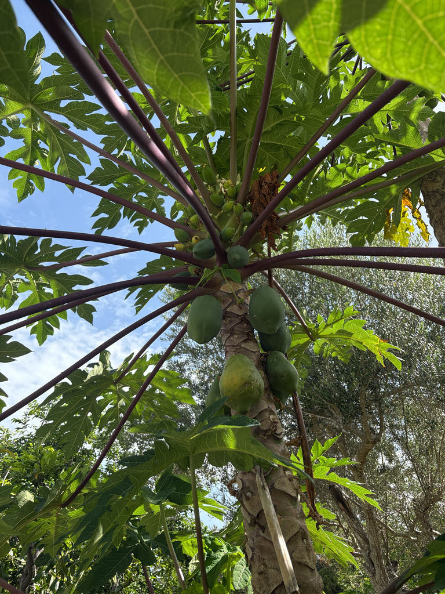

- Grows faster than almost any tree in Florida — a papaya planted from seed can produce fruit in under a year.
- Every part of the plant contains papain, a protein-digesting enzyme used commercially in meat tenderizers, contact lens cleaners, and some digestive supplements.
- The tree is technically a giant herbaceous plant, not a tree at all. The trunk is soft and pithy, with no true wood. It grows and fruits, then usually declines within a few years.
- Fruit ripe on the tree is edible. Seeds are edible and peppery — sometimes used as a black pepper substitute.
Non-native. Native to southern Mexico and Central America. Now cultivated throughout the tropics and subtropics. Member of Caricaceae — a small family of mostly tropical American plants.
- Papaya holds a useful position in the collection: a fast-growing, fruit-producing, visually interesting plant that most visitors immediately recognize and many have never seen growing on a tree. The fruit emerges directly from the trunk just below the leaf crown, which surprises people expecting it to hang from branches.
- The tree is not technically a tree. The trunk is composed of soft, pithy, rapidly growing tissue with no heartwood. A papaya planted in spring can produce fruit by fall — a growth rate that makes it useful as a teaching plant for showing visitors what tropical fruit production actually looks like.
- Papain, the enzyme in all parts of the plant but concentrated in the latex of unripe fruit, has found its way into a remarkable range of commercial products: meat tenderizers, contact lens cleaners, wound debridement preparations, and digestive supplements. The unripe latex is the source; ripe fruit retains much less active enzyme.
- Most individual papaya plants are relatively short-lived — a few productive years, then decline. But in a warm Florida garden they reseed readily, and a colony of different-aged plants maintains itself with minimal intervention.
The flowers attract bees and other pollinators. Many papaya plants are dioecious — male and female flowers on separate plants — and fruit set requires a male plant nearby. Some cultivars are hermaphroditic and self-fertile.
Ripe fruit on the tree is eaten by birds, raccoons, and other wildlife before it can be harvested. The fallen fruit feeds ground-feeding birds and invertebrates.
As a fast-growing pioneer plant, papaya creates canopy quickly in disturbed or open areas, providing structure and shade for understory plants and ground-level wildlife.
Pale yellow, fragrant, appearing at the base of the leaf crown on the upper trunk. Male flowers on long branched stalks; female flowers on short stalks or sessile. Hermaphroditic cultivars bear both. Pollinated primarily by moths and bees.
Large, melon-like, borne directly on the trunk below the leaf crown. Green when immature, yellow to orange when ripe. Flesh orange to salmon. Center cavity contains black, peppery seeds in a gelatinous coating. Edible when ripe.
Very large, deeply palmate-lobed, on long hollow petioles. Arise in a crown at the top of the trunk. Drop progressively, leaving a ringed scar pattern on the trunk.
Soft, pithy, hollow, with prominent leaf scar rings. Exudes white latex when cut. Technically not woody — a giant herb.
Fruit growing directly from the upper trunk is the defining feature. The deeply lobed leaf crown and ringed scar pattern on the trunk are visible year-round.
The ripe fruit is one of the world's most-eaten tropical fruits, and the peppery seeds and cooked young leaves and flowers are edible too.
The unripe fruit's latex is rich in papain, which can irritate skin and trigger allergic reactions; the roots and bark shouldn't be eaten.
For dogs, ripe flesh is safe in moderation. Keep the seeds away — they hold trace cyanide compounds — and avoid unripe fruit and latex.


- © Hailee Alenduff (CC-BY-NC), via iNaturalist
- © Joanne Walker (CC-BY-NC), via iNaturalist
- © Maria Escobar (CC-BY-NC), via iNaturalist
- © Ruby Meador (CC-BY-NC), via iNaturalist